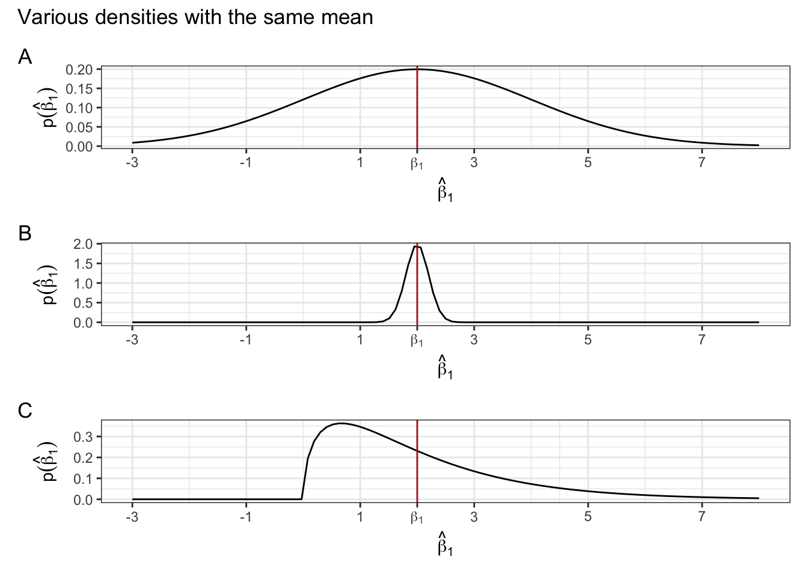

View libraries and data sets used in these notes
library(tidyverse)
library(tidymodels)
library(DT)
library(latex2exp)
library(patchwork)
pokemon <- read_csv("https://sta221-fa25.github.io/data/pokemon_data.csv") # complete, population dataDr. Alexander Fisher
As of 2025, there are 1025 pokemon in existence.
In all statistical inference tasks, we only have a sample from the population. Let’s consider a random sample of the pokemon data, given below:
set.seed(48)
pokemon_sample <- pokemon |>
slice_sample(n = 15) |>
select(dexnum, name, height_m, weight_kg) |>
arrange(dexnum)
datatable(pokemon_sample, rownames = FALSE, options = list(pageLength = 5),
caption = "sample of 15 pokemon")Let’s investigate the question: are heavier pokemon taller?
How can we tell if our estimates \(\hat{\beta}\) are any good?
pokemon_hw = pokemon |>
select(height_m, weight_kg)
BETA_HAT <- NULL
for(i in 1:1000) {
fit <- pokemon_hw |>
slice_sample(n = 15) |>
lm(height_m ~ weight_kg, data = _)
BETA_HAT <- rbind(BETA_HAT, fit$coefficients)
}
BETA_HAT <- data.frame(BETA_HAT)
colnames(BETA_HAT) <- c("beta0", "beta1")
glimpse(BETA_HAT)Rows: 1,000
Columns: 2
$ beta0 <dbl> 0.9016025, 0.5209848, 0.6775509, 0.8639395, 0.4678607, 0.4351285…
$ beta1 <dbl> 0.004823824, 0.010159875, 0.008377374, 0.012071556, 0.016425420,…Our objective is to infer properties about a population using data from an experiment or survey (in this case, a survey/sample of pokemon).
Post-experiment: after collecting the data, \(\hat{\beta}_0, \hat{\beta}_1\) are fixed and known.
Pre-experiment: before collecting the data, the data are unknown and random. \(\hat{\beta}_0, \hat{\beta}_1\), which are functions of the data, are also unknown and random.
In all cases, the true population parameters, \(\beta_0, \beta_1\) are fixed but unknown.
Pre-experimental question: is the probability distribution of \(\hat{\beta}_0, \hat{\beta}_1\) a meaningful representation of the population?
Answer: this depends on certain assumptions we make about population.
\(E[\boldsymbol{\varepsilon}|\boldsymbol{x}] = \boldsymbol{0}\), or equivalently, \(E[\varepsilon_i|\boldsymbol{x}] = 0\) for all \(i\).
Implications: in simple linear regression, assumption 1 implies that \(E[y_i|\boldsymbol{x}] = E[\beta_0 + \beta_1 x_i + \epsilon_i|\boldsymbol{x}] = E[\beta_0 |\boldsymbol{x}] + E[\beta_1 x_i|\boldsymbol{x}] + E[\epsilon_i|\boldsymbol{x}] = \beta_0 + \beta_1 x_i\).
Show that assumption 1 implies that \(E[\hat{\beta}|\boldsymbol{X}] = \beta\).
\[ \begin{aligned} E[\hat{\beta}|\boldsymbol{X}] &= E[(\boldsymbol{X}^T\boldsymbol{X})^{-1}\boldsymbol{X}^T\boldsymbol{y}| \boldsymbol{X}]\\ &= (\boldsymbol{X}^T\boldsymbol{X})^{-1}\boldsymbol{X}^T E[\boldsymbol{y}| \boldsymbol{X}]\\ &= (\boldsymbol{X}^T\boldsymbol{X})^{-1}\boldsymbol{X}^T \boldsymbol{X}\beta\\ &= \beta \end{aligned} \]
Since \(E[\hat{\beta}|\boldsymbol{X}] = \beta\), we say \(\hat{\beta}\) is an unbiased estimator of \(\beta\).
Notice that this result (unbiasedness) does not depend independence of errors, normality, or constant variance.
However, the result doesn’t tell us anything about how close \(\hat{\beta}\) will be to \(\beta\). The estimator may be unbiased, but by itself, this doesn’t tell us much. See examples of “unbiased” distributions of an estimator below.
